the first doll i ever bought. absolutely 100% an impulse buy. I wanted ducan or petsha and this event came up and i just did it despite not wanting him that badly.
i mopped the floors many times for this damb doll. it was such a pain ordering him. they said "credit card only!" and then we tried faxing it, but it never went through or something? so half way through, they decided we needed to use paypal, which should have been an option in the first place. it was weird and confusing at the time
i asked DOD to pierce his ears for me and ofc he ended up with gay baby hoops because they listened to my request
he has a chip on the inside of his knee straight from the factory and some other defects. by the time i got him, i was so uninterested in talking to DOD that i didnt even bother complaining. he was a troublesome boy
 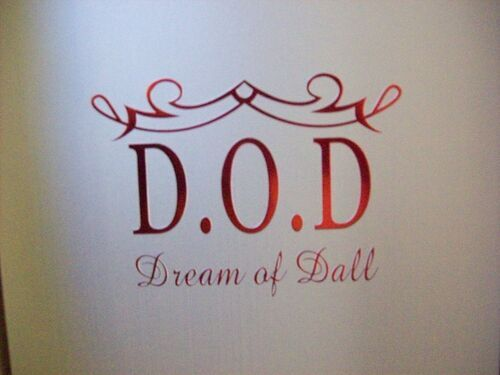
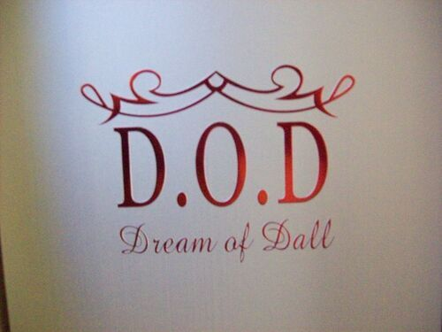
 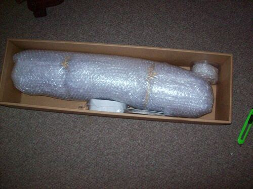
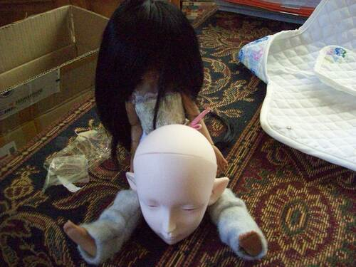
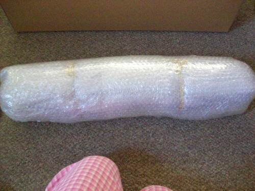
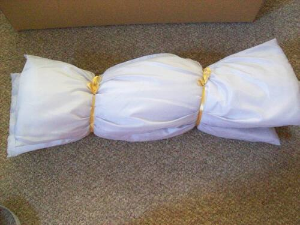
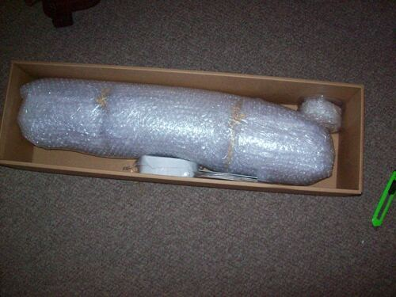
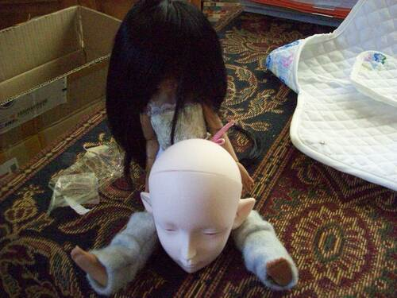
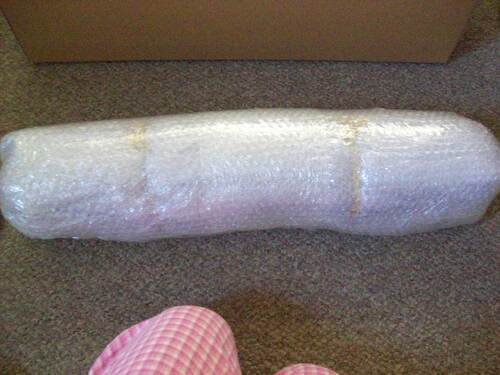
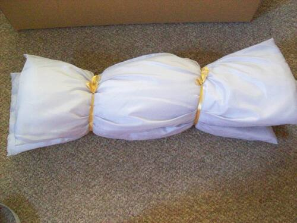

 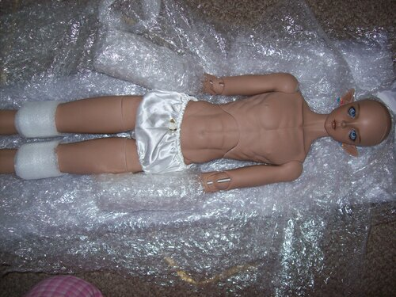
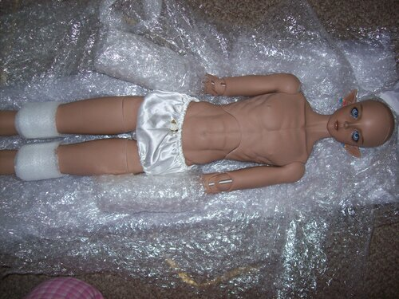
 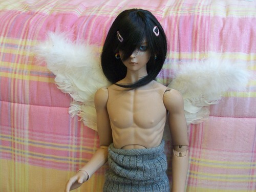
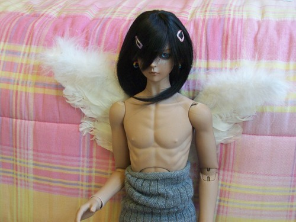